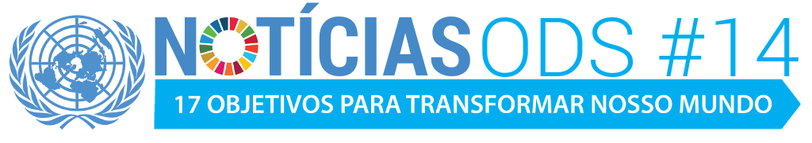

=========================================================================
BEM VINDO
Nessa página vou fazer um breve resumo do objetivo 14 da ONU sobre a conservação e uso sustentavel da água e dos recursos marinhos.
=========================================================================
==================================================================================================
-A ONU pretende reduzir e previnir a poluição marinha de todos os tipos como: detritos marinhos, poluição por nutrientes e poluição por atividades terrestres.
-Também pretende em 2020 proteger os rios, oceanos e mares.
-Conservar 10% das zonas costeiras e marinhas.
-Proibir certas formas de pescas que ajudam a sobrecapacidade e a sobrepesca, e probir a pesca ilegal.
-Até 2030, aumentar a economia de pequenos estados e países menos desenvolvidos com o uso de recursos marinhos como pesca, aquicultura e turismo.
-Criar capacidades de pesquisa e a tecnologia marinha.
-Aumentar o acesso dos pequenos pescadores ao recursos marinhos e mercados.
-Assegurar a conservação e o uso sustentavel dos oceanos e seus recursos.
Vídeo explicando sobre o ODS 14:
==================================================================================================
-5 Dicas para não poluir os rios, mares, oceanos:
-Não Jogar lixo na água como: Sacolas, pacotes de salgadinho, papeis, garrafas de vidro e plásticas.
-Não descarte óleo de cozinha no ralo da pia. Sempre guarde em uma garrafa e entregue para alguma cooperativa que possa ser transformado em sabão.
-Jogue o lixo nas lixeiras distrbuídas pela cidade ou nos parques.
-Plante perto dos rios para que assim evite a erosão do solo.
-Use garrafas reutilizáveis em vez de garrafas PET.
==================================================================================================
==================================================================================================